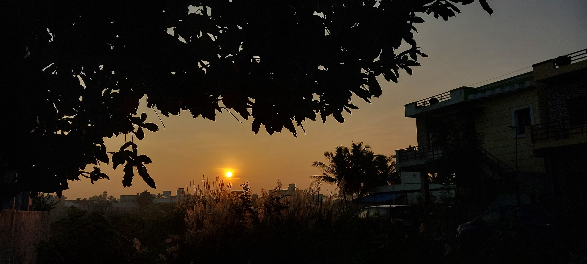
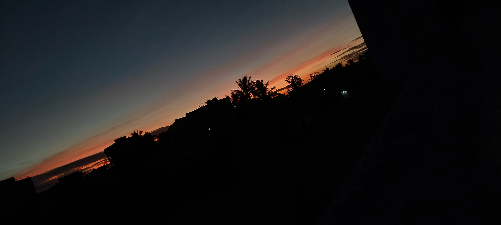
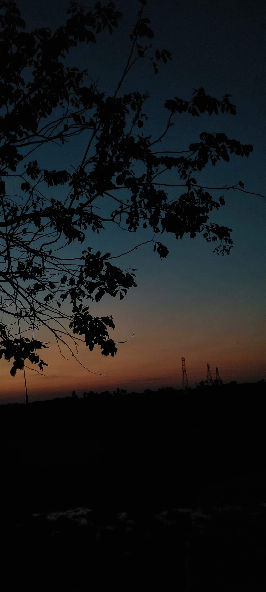
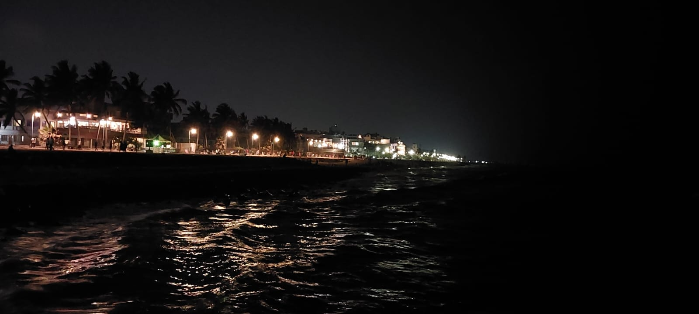
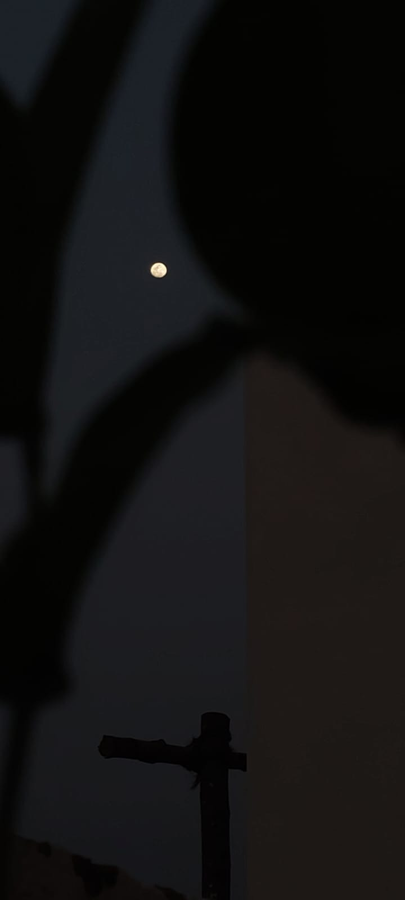
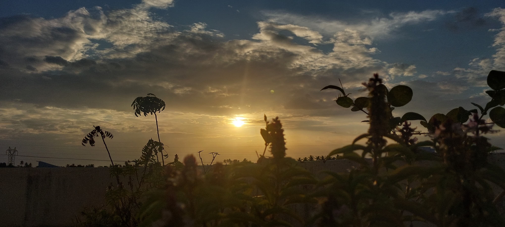
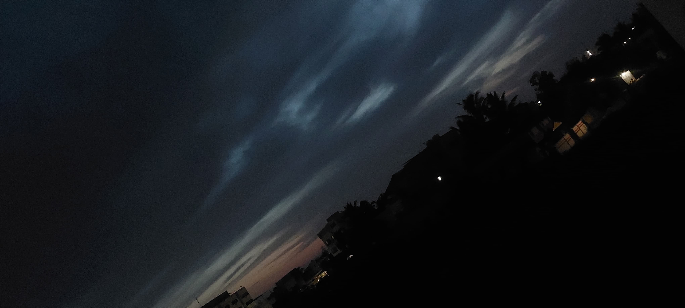

A calm sunrise I captured during a morning hike.
This photo captures one of the most peaceful parts of my day — the sunrise. As the first light of the sun stretches across the sky, painting it with shades of orange and gold, I feel a sense of calm that no words can fully express.
Watching the sunrise has become a daily ritual for me. With a warm cup of coffee in hand, I sit quietly, taking in the beauty of the morning. It's in these silent moments that I begin to organize my thoughts — deciding what to do today, what can wait, and what truly matters.
This simple routine grounds me. It's a quiet promise I make to myself — to start each day with peace, clarity, and a deep breath. No matter how busy life gets, my mornings with the sunrise and coffee will never come to an end.
The view was breathtaking. The golden light scattered across the misty hills made the entire scene magical.
"Where the Blue Flows Free"
A blue river flows like time—calm, steady, and deep with meaning
This was a random click on my way to college, with my head full of assignment stress. But the calm river, clear sky, and quiet around gave my mind a sudden sense of peace. That moment reminded me—sometimes, nature is all the reset we need.
.
"Even the clouds gathered to listen to my quiet thoughts."
A cluster of clouds drifted across the sky—not in a hurry, not with a plan, just dancing with the wind
It was one of those quiet moments when I looked up and saw a group of clouds gently moving together. They weren’t rushing anywhere or forming any grand shape—just floating, softly brushed by the breeze. It felt peaceful, like a reminder that not everything in life needs to be perfect or planned. Sometimes, it’s enough to just be, to move gently with whatever direction the day takes us.
"5 AM Calm Before the Storm"

In the stillness of dawn, the sky painted peace—and for a moment, my mind was free from exam worries.
It was the morning of my semester exam, and I had woken up early—around 5 AM—to get in some final revision. My mind was clouded with stress and formulas, but when I stepped outside, the sky stopped me in my tracks. The shades of blue, scattered clouds, and the soft morning light gave me a strange sense of calm. I paused, took a deep breath, and captured this photo. That one peaceful moment reminded me that no matter how hectic the day is, nature always offers a little comfort—if we just look up.
"A View I’ll Always Carry"
Sometimes, it’s not just a place—it’s a feeling that stays long after we leave.
This was my spot—right under that tree, where I’d sit and look across the campus. Whether I was stressed, tired, or just needed a moment of peace, this view gave me comfort. Now that I’ve moved on, I realize how much I miss these quiet moments. The buildings, the open ground, the blue sky—they were all silent companions during my journey. This place wasn’t just a college; it was a chapter of life.
"Sunday Evening Walk"

The sky speaks in colors and whispers — I only needed to pause and listen.
On a serene Sunday evening, I took a walk with my mom, surrounded by nature’s quiet wonders. The sun was setting gently, clouds floated like soft brushstrokes, and the first stars began to peek out. These moments of calm and beauty inspired me to capture the fleeting stories of the sky — from sunlit days to starlit nights. Each photo you see here is a piece of that peaceful evening, a memory preserved through my eyes and lens.
"Awakening Light: Sunrise at Auroville Beach"
The sun doesn't just rise — it gently reminds us to begin again
Our college night tour was filled with laughter, music, and endless memories. After hours of dancing, singing, and climbing through the night, we finally reached Auroville Beach just before dawn. Tired but thrilled, we stood together in silence as the sky slowly shifted — from darkness to golden light. That sunrise wasn’t just a view; it was a moment of peace after chaos, a soft landing after a wild ride. This photo holds that quiet joy — the calm after the storm of youth.
"Midnight Echoes: French Colony After Dark"

When the world sleeps, the streets of the French Colony light up with a silent, golden poetry
Night falls gently in the French Colony, wrapping its quaint streets in a soft, golden glow. The lamps cast warm halos on cobblestone paths, and the pastel walls take on a new mood — quieter, deeper, more romantic. With the city hushed, every corner felt like a secret waiting to be discovered. We wandered slowly, taking in the calm, the architecture, the quiet breeze — a side of Pondicherry that only the night reveals. These photos capture that dreamlike stillness, where time seems to pause and beauty lingers in the shadows.
"The Silent Listener: My Moon Confidant"

The moon — the one who listens to all my stories, watches me break, and still shines gently through my darkest nights
Some nights, when words fail and people don’t understand, I look up — and there it is. The moon. Quiet, patient, always there. It has seen me at my most vulnerable, heard the cries I never said out loud, and stayed with me through every silent tear. Capturing the moon in this photo was like capturing a piece of my own journey — my secret friend, my witness, my calm in the chaos. If you’ve ever spoken to the night sky when no one else was listening, you’ll understand why this one means so much to me.
"Golden Pause: After College Hours"

Some sunsets don’t just end the day — they heal the tired soul behind
After a long day at college, I stepped out to catch my breath — and the sky greeted me with a soft, burning orange glow. The sun, halfway gone, painted everything gold, as if telling me, “You made it through today.” In that moment, the stress faded, replaced by stillness. I stood there, tired yet strangely comforted, and captured this photo — a gentle reminder that even after the busiest days, beauty still finds a way to reach us.
"Whispers Before the Rain"

The sky holds its breath — grey, gentle, and waiting — just before the first drop falls
There’s something hauntingly beautiful about the moments before rain. The sky darkens, the breeze cools, and the clouds gather like old friends returning with stories. That silence — soft, expectant — feels like nature pausing before it begins to cry. I captured this just before the first raindrops touched the earth, when the sky was heavy but calm, a perfect reflection of emotions we all feel but rarely express. It’s in these moments that nature and feeling quietly become one.